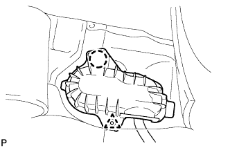
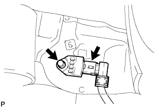

ЗАДНИЙ НАПОЛЬНЫЙ ДАТЧИК СИСТЕМЫ SRS > СНЯТИЕ |
| 1. ОТСОЕДИНИТЕ ПРОВОД ОТ ОТРИЦАТЕЛЬНОГО ВЫВОДА АККУМУЛЯТОРНОЙ БАТАРЕИ |
| 2. СНИМИТЕ ЗАДНЕЕ СИДЕНЬЕ № 1 В СБОРЕ |
для сидений раздельного типа 60/40 с двойным складыванием с левой стороны:
Снимите заднее сиденье № 1 в сборе (Нажмите здесь).
для сидений раздельного типа 60/40 с двойным складыванием с правой стороны:
Снимите заднее сиденье № 1 в сборе (Нажмите здесь).
для опускаемых сидений раздельного типа 60/40 с левой стороны:
Снимите заднее сиденье № 1 в сборе (Нажмите здесь).
для опускаемых сидений раздельного типа 60/40 с правой стороны:
Снимите заднее сиденье № 1 в сборе (Нажмите здесь).
Для выдвижного раздельного сиденья 60/40 с функцией облегчения посадки с левой стороны:
Снимите заднее сиденье № 1 в сборе (Нажмите здесь).
Для выдвижного раздельного сиденья 60/40 с функцией облегчения посадки с правой стороны:
Снимите заднее сиденье № 1 в сборе (Нажмите здесь).
| 3. СНИМИТЕ ЗАДНЮЮ НАКЛАДКУ ПОРОГА ПОЛА № 1 (для моделей с задним сиденьем № 2) |
 |
С помощью отвертки освободите 2 захвата и снимите заднюю накладку порога пола № 1.
| *1 | Защитная клейкая лента |
| 4. СНИМИТЕ ЛЕВУЮ ЗАДНЮЮ БОКОВУЮ ОПОРНУЮ НАКЛАДКУ (для моделей с задним сиденьем № 2) |
 |
Выверните 2 болта и снимите заднюю боковую опорную накладку.
| 5. СНИМИТЕ ПРАВУЮ ЗАДНЮЮ БОКОВУЮ ОПОРНУЮ НАКЛАДКУ (для моделей с задним сиденьем № 2) |
| 6. СНИМИТЕ ОПОРНУЮ НАКЛАДКУ ЛЕВОЙ ЗАДНЕЙ ДВЕРИ |
 |
Наклейте защитную клейкую ленту вокруг опорной накладки задней двери.
С помощью отвертки освободите 3 фиксатора, 6 захватов и 2 направляющие и снимите опорную накладку задней двери.
| *1 | Защитная клейкая лента |
| 7. СНИМИТЕ ОПОРНУЮ НАКЛАДКУ ПРАВОЙ ЗАДНЕЙ ДВЕРИ |
| 8. СНИМИТЕ КРЫШКУ БОКОВОГО ДАТЧИКА СИСТЕМЫ SRS В ЗАДНЕМ ПОЛУ |
Отогните напольный коврик.
|  |
Освободите захват и фиксатор и снимите крышку.
| 9. СНИМИТЕ БОКОВОЙ ДАТЧИК СИСТЕМЫ SRS В ЗАДНЕМ ПОЛУ |
|  |
Выверните болт и снимите датчик.
Отсоедините разъем.